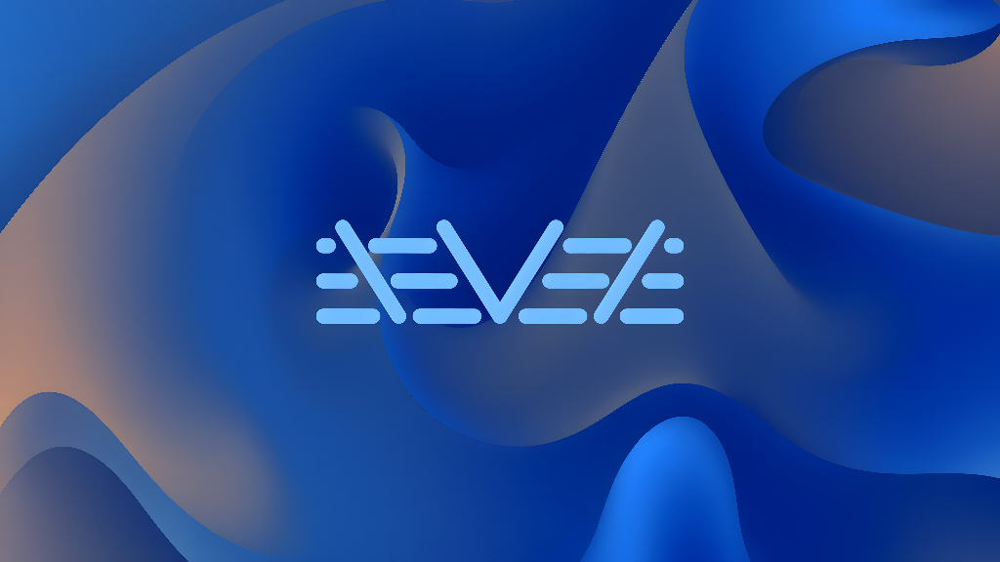

Sub-500 MB idle RAM. Direct Wayland compositor architecture. Zero telemetry. 12 native applications built with modern acrylic aesthetics.

Ditching bloated web-view runtimes and background daemon spam for bare-metal C and optimized GTK3 Wayland ergonomics.
Labwc wlroots compositor, native Waybar acrylic taskbar, and streamlined services run on just 380–450 MB RAM, leaving 90%+ system memory for your workflow.
Enforced under Victorian Privacy License (VPL). Zero telemetry beacons, zero diagnostic pings, zero cloud analytics. Complete sovereignty over your operating system.
High-contrast `#18181b` and `#09090b` palette with frosted acrylic layering, subtle borders, and 6 HD curated wallpapers with instant personalization.
Runs as a genuine standalone display environment on Linux seat0 via PAM logind. Not a nested window or GNOME shell skin.
Consistent design language, full minimize/maximize window controls, and seamless Wayland keyboard integration.
Fluent 1-to-1 File Explorer with Quick Access, breadcrumbs, search bar, and full clipboard integration.
System Hub & Personalization. Display resolution, WirePlumber sound, 6 HD wallpapers, and custom picture browser.
Acrylic tabbed text editor with word wrap, Ln/Col status indicators, character count, and quick search.
Wayland acrylic terminal emulator with multi-tabs, zoom hotkeys, and direct shell invocation.
Creative canvas paint suite powered by Cairo vector graphics, brush size adjustments, shapes, and PNG export.
High-DPI photo viewer with pan, zoom, 90° rotation, fit-to-window geometry, and folder slideshow traversal.
Standard and scientific calculation engine with reciprocals, roots, powers, memory registers, and numpad support.
Desktop clock, world time clocks (London, New York, Tokyo), stopwatch with lap timing, and countdown timer.
Recycle Bin manager inspecting `~/.local/share/Trash`, file size inspection, one-click restore, and safe wipe.
Accessibility text-to-speech reader with speed and pitch sliders, reading any clipboard text on demand.
Snipping tool with slurp+grim rectangle selection, delay countdown, clipboard copy, and direct Paint editing.
Local network phone integration dashboard compatible with KDE Connect protocol and clipboard synchronization.
Instinctive hotkeys designed for high-efficiency multitasking on wlroots.
| Action | Shortcut | Description |
|---|---|---|
| Start Menu Launcher | Win or Win + Space | Toggle VDE acrylic application launcher |
| Terminal (Crossminal) | Win + Enter / Ctrl + Alt + T | Launch Wayland acrylic terminal emulator |
| File Explorer (Crossmanager) | Win + E | Launch Fluent file manager |
| Settings Hub (Crossings) | Win + I | Open display, wallpapers, and audio control center |
| Snipping Tool (Crossnip) | PrintScreen or Win + Shift + S | Capture interactive rectangular screen snippet |
| Snap Left / Right Half | Win + ← / → | Dock current window to 50% left or right screen edge |
| Quadrant 4-Corner Snap | Win + Alt + Arrows | Dock window to any 25% quadrant corner |
| Maximize / Minimize | Win + ↑ / ↓ | Toggle full maximize or minimize window |
| Task Switcher | Alt + Tab | Cycle through active running windows |
| Close Window | Alt + F4 or Win + Q | Gracefully terminate current application window |